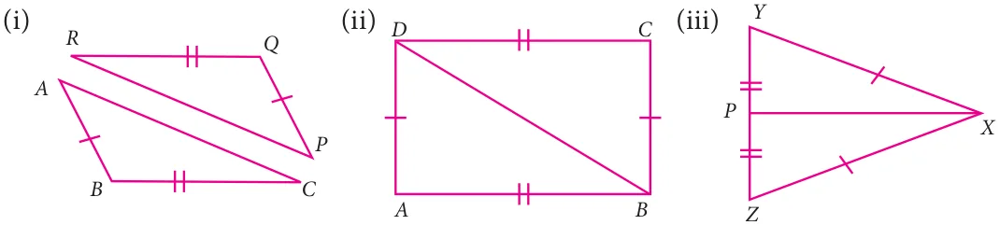
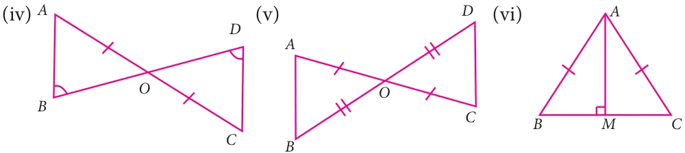

- 1.In the figure, AB is parallel to CD, find x


- 2.The angles of a triangle are in the ratio 1: 2 : 3, find the measure of each angle of the
triangle.
- 3.Consider the given pairs of triangles and say whether each pair is that of congruent
triangles. If the triangles are congruent, say ‘how’; if they are not congruent say ‘why’ and also say if a small modification would make them congruent:


- 4.ΔABC and ΔDEF are two triangles in which
AB=DF, \(ACB=70 ^{\circ}\) , \(ABC=60 ^{\circ}\) ; \(DEF=70 ^{\circ}\) and \(EDF=60 ^{\circ}\) . Prove that the triangles are congruent. \(\angle \angle \angle \angle\)
- 5.Find all the three angles of the ΔABC